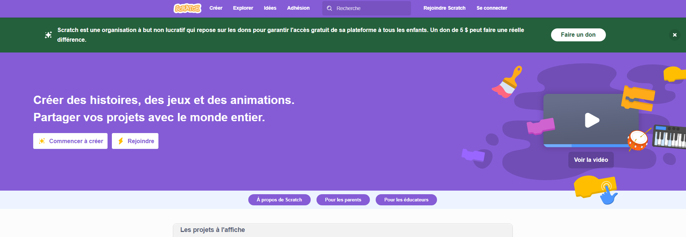
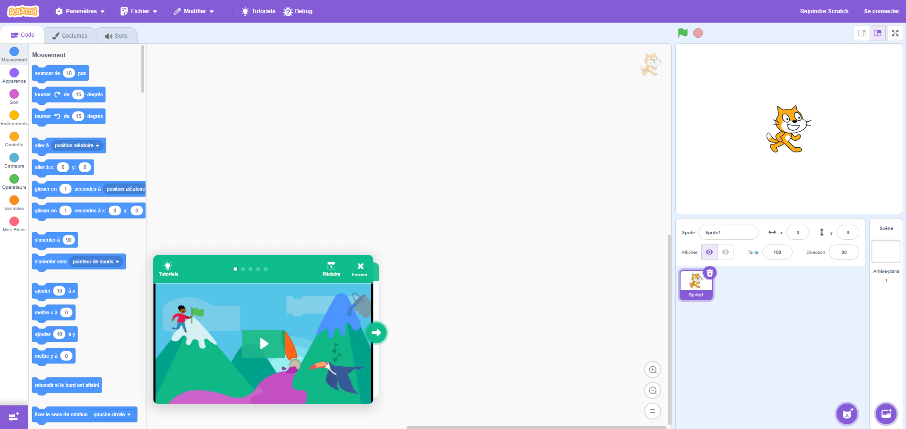
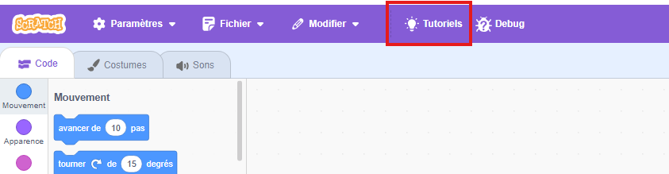
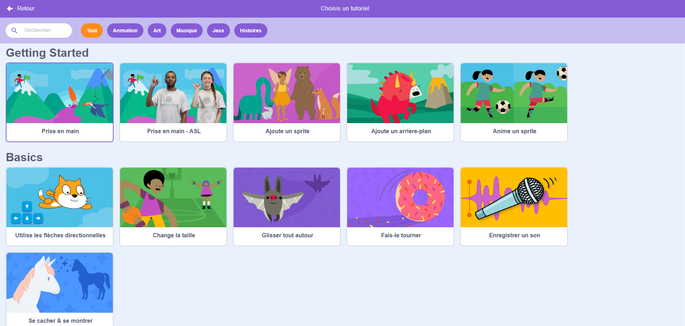
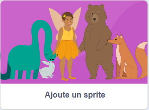
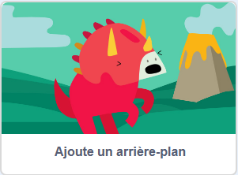
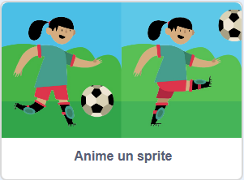
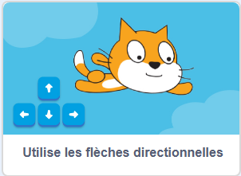
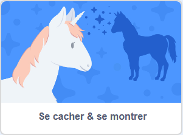

Réalisation d'un petit jeu avec Scratch
- Rendez-vous sur le site officiel de Scratch : https://scratch.mit.edu/.
-
Vous devriez avoir le site suivant:

- Cliquez sur "Commencer à créer" pour accéder à l'éditeur de projet.
-
Vous devriez arriver sur l'interface de création de Scratch:

-
Cliquez sur "Tutoriels":

Ou ici:

-
Vous devriez arriver sur la page des tutoriels:

-
Choisir le tutoriel "Prise en main":

-
Nous allons maintenant voir comment ajouter un sprite. Dans le monde du jeu vidéo, une image est appelée un sprite, cette image représente le personnage principal du jeu, un adversaire, un objet, etc...
-
Retourner sur la page des tutoriels et choisir le tutoriel "Ajoute un sprite":

- Pour que le jeu soit un peu plus jolie et un peu plus "vivant", nous pouvons ajouter un arrière-plan, afin de mettre en place le "décor" de notre jeu.
-
Retourner sur la page des tutoriels et choisir le tutoriel "Ajoute un arrière-plan":

- Maintenant que nous avons un personnage (sprite) et un décor (arrière-plan), nous allons apprendre à faire bouger notre sprite.
-
Retourner sur la page des tutoriels et choisir le tutoriel "Anime un sprite":

- Pour rendre notre jeu un peu plus interactif, nous allons apprendre à faire bouger notre sprite avec les flèches du clavier.
-
Retourner sur la page des tutoriels et choisir le tutoriel "Utilise les flèches directionnelles":

- Pour rendre notre jeu encore plus intéressant, nous allons apprendre à afficher et cacher des éléments.
-
Retourner sur la page des tutoriels et choisir le tutoriel "Se cacher & se montrer":

- Vous avez maintenant les bases pour créer votre propre jeu avec Scratch, alors soyez créatif !